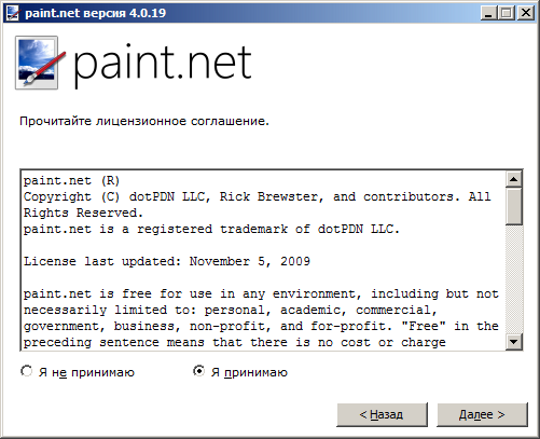

Лицензирование открытого программного обеспечения
Что такое лицензирование
В двух словах, лицензирование даёт определённые полномочия сторонним лицам на использование вашего продукта.
Лицензирование является прекрасной альтернативой простой передаче продукта в общественное достояние или предоставлению разрешения в каждом конкретном случае.
Лицензирование осуществляется с помощью специального документа — лицензии. Лицензия эта та стена текста, с который вы сталкиваетесь каждый раз, когда устанавливаете новое программное обеспечение.
Строго говоря, лицензия — это договор между автором программного обеспечения и его пользователем. Именно лицензия дает вам право устанавливать и использовать программу. В ней прописано, что вы можете и что не можете делать с программным обеспечением.
Лицензии открытого программного обеспечения предоставляют людям возможность внести свой вклад в проект, не спрашивая ни у кого специального разрешения. Они также защищают вас как автора, что гарантирует хотя бы наличие вашего имени в списках разработчиков. Это также обезопасит вашу работу от кражи другими лицами.
Лицензии открытого программного обеспечение
Рассмотрим далее три вида наиболее часто используемых для открытого программного обеспечения лицензий. На самом деле их намного больше — более 40-ка. Многие практически дублируют друг друга с некоторыми небольшими оговорками, что создаёт сложности в их выборе и использовании.
- GNU General Public License
- MIT License
- Apache License
Программные продукты, распространяемые под этими лицензиями можно свободно использовать и изменять. Они позволяют включать исходный код в свои, даже коммерческие проекты.